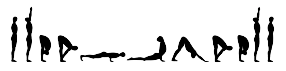

Benefici fisici
E' possibile allungare, elasticizzare e rinforzare i muscoli e le componenti scheletriche di certe zone del corpo, favorendo la diminuzione del dolore e migliorando la postura.
A livello fisico dove riceviamo più benefici dallo yoga, con la pratica regolare, i benefici sono molti, oltre che a livello spirituale anche a quello fisico. Di seguito verranno consigliate determinate posizioni in base alla zona del corpo che si vuole allenare.
Oppure clicca QUI per andare direttamente a conoscere le posizioni generali più utili dello yoga, che coinvolgono tutto il corpo.
Quali caratteristiche fisiche e mentali migliorano con lo yoga:
La flessibilità di tutto il corpo, tra gli altri benefici dello yoga c’è quello di allungare i
muscoli e aumentare la gamma di movimento. La pratica regolare, farà migliorare la flessibilità.
Ci vuole molta forza per tenere il vostro corpo in una posizione
yoga equilibrata. La pratica regolare rafforza i muscoli delle braccia,
schiena, gambe e cuore.
Riduce ansia, depressione e attacchi di panico, attraverso la pratica di tecniche di respirazione e di meditazione, si impara a gestire il campo emozionale, e questo ci aiuta a gestire le paure inconsce.
Addominali
Ci sono posizioni yoga che sollecitano quasi tutti i muscoli del nucleo centrale del corpo. Vuoi ridurre le tue maniglie dell’amore?
Per massimizzare davvero gli effetti degli addominali, si può fare la posizione
della barca, partendo da seduti, spostare il peso all’indietro e trovare l’equilibrio nella parte bassa della schiena, intorno al coccige. Una volta sicuri nell’equilibrio, sollevare i piedi da terra e, distendere le gambe in modo tale da formare un angolo di 45° gradi rispetto al pavimento, le braccia sono parallele a terra ai lati delle gambe. La schiena è dritta, lo sterno sollevato.

Un'altra posizione che può aiutare nel sviluppare gli addominali è la posizione del bastone, meglio conosciuta come plank. Poni la fronte a terra, appoggia le mani ai lati del torace e punta i piedi a terra, solleva il corpo stendendo completamente le braccia, oppure per rendere la posizione più intensa, basta abbassarsi fino a mettere i gomiti aderenti al torace.
Braccia
Con lo yoga, si può costruire la forza delle braccia senza pesi o macchinari, ma con il peso del proprio corpo.
Come la posizione del corvo, sfidando le braccia a sostenere il peso di tutto il corpo, richiede un po’ più di controllo del corpo e un po’ più di forza nelle braccia. Questa posizione può avere una grande efficacia per rafforzare bicipiti e tricipiti, fa lavorare muscoli addominali e polsi. Per realizzarla è fondamentale avere un buon equilibrio. Mettetevi accovacciati, appoggiate al suolo le mani ben aperte e separate le gambe, le ginocchia puntano verso i lati. Sollevate poco a poco il corpo, allo stesso tempo sollevate anche il busto in avanti e staccate le gambe dal suolo. Le ginocchia il più possibile poggiate sulla parte posteriore delle braccia, l’equilibrio si trova con la posizione della testa.
Gambe e Glutei
Tra i benefici dello yoga c’è il lavoro completo che si svolge sulle gambe, quadricipiti, fianchi e cosce. Inoltre con squat e ponti lo yoga coinvolge le ginocchia in piegamenti profondi, che ti daranno glutei più scolpiti.
La posizione del ponte è tra le più efficaci per rassodare i glutei. Sdraiatevi a terra, piegate le gambe e appoggiate i piedi al suolo, portandoli davanti ai glutei, paralleli e distanti fra loro quanto la larghezza del bacino. Le braccia sono tese ai lati del corpo, con i palmi a terra. Inspirate. Attivando con forza i glutei e la parte posteriore delle cosce e, facendo leva sulle mani, espirate e staccate dal suolo prima il coccige, poi il bacino e tutta la schiena, fino all’altezza delle spalle.
Un’altra posizione tonificante è quella dell’aratro, specifica per modellare i glutei.
Sdraiandosi in posizione distesa, a pancia in su, facendo forza sulle braccia e sui palmi delle mani, che rimangono parallele al corpo, inspirando si spingono le gambe portandole perpendicolari al suolo e con i piedi verso il soffitto, dopodichè si portano i piedi oltre la testa fino a toccare il pavimento, mantenendosi in equilibrio sulle braccia.
Schiena
La pratica dello yoga, grazie ad una serie di posizioni specifiche per la colonna vertebrale, aiuta a mantenere in buona salute la spina dorsale, tonificando la muscolatura e migliorando l’elasticità del corpo. Con lo yoga si impara a portare attenzione al controllo della postura in ogni momento della giornata, correggendo poco alla volta i più comuni difetti posturali.
Tra le posizioni che avranno un effetto benefico sul dolore alla schiena,
troviamo:
La posizione del cobra: partendo distesi sulla pancia, si appoggia la fronte sul pavimento, unire strettamente le gambe, tenendo i piedi allungati sul loro dorso, dopo di che appoggiare i palmi delle mani a terra, ai lati del torace, con i gomiti sollevati;
strisciando a terra il naso, la bocca, il mento, ruotare indietro il capo e sollevare il busto, lasciando piegati i gomiti e senza superare l’ombelico, che resta al pavimento;
Un’altra delle posizioni che ci aiutano di più a far passare il mal di schiena è una torsione “del serpente”: si parte da un posizione distesa sulla schiena, unire le gambe, piegare la gamba destra portando la pianta del piede sopra il ginocchio opposto;
prendere il ginocchio destro con la mano sinistra, “tirandolo” dolcemente verso terra, a sinistra, mentre il capo ruota a destra, la mano è lontana dal busto.
Contro la cervicale
Due posizioni da fare da seduti, il gesto del dio Brahma e la posizione del bambino.
La prima non è una vera posizione, sarebbe meglio definirla come un gesto, in quanto la posizione da tenere è quella della meditazione e i movimenti da fare sono minimi. Si inizia sedendosi in una posizione comoda, con le gambe incrociate, in posizione di loto, mettendo le mani sulle ginocchia.
Dopo essersi rilassati ad occhi chiusi per qualche minuto, si può iniziare: espirare e ruotare lentamente la testa a destra; inspirando, tornare al centro ed espirando ruotare la testa verso sinistra. Inspirando, tornare al centro e ripetere le torsioni cinque volte per lato.
Per la seconda posizione è necessario mettersi in ginocchio, seduti sui talloni. Portare il busto in avanti, appoggiando gli avambracci a terra, la testa in avanti e allungare il comodo rimanendo comodi, assicurarsi si allungare bene le vertebre della zona cervicale. Distendere le braccia indietro, con i palmi all’insù, portandoli verso i piedi. Stare fermi e rilassarsi completamente, inspirando ed espirando lentamente.
Le Posizioni Di Base
Per posizioni di base si intendono quelle posizioni che vengono praticate più spesso in quanto coinvolgono più parti del corpo e perchè sono fattibili per tutti.
Saluto al Sole
Nonostante non sia una sola posizione, bensì una sequenza di diverse asana, è d'obbligo nominarla. Questa è una delle sequenze più frequenti nell'hatha yoga, conosciuta anche come il Saluto al Sole o Surya Namaskar, è ideale come riscaldamento per ogni lezione di qualsiasi stile di yoga, inoltre rinforza tutti i muscoli del corpo e sviluppa la concentrazione, la coordinazione e l’equilibrio.

Posizione del Cane a testa in Giù
Adho Mukha Svanasana, è una delle asana chiave di qualsiasi tipo di pratica yoga. Anche se al principiante può essere faticosa, in realtà è una postura di riposo attivo, utilizzata come transizione nei Saluti al Sole, agevola il defaticamento, soprattutto nelle sequenze di yoga dinamico (come il Vinyasa Flow o l'Ashtanga Yoga). Il Cane a Testa giù è un'asana preziosa perché attiva, allunga e riallinea tutti i muscoli del corpo tonificando gli organi interni e il sistema endocrino.
Questa asana allunga e rinforza i muscoli della schiena e distanzia le vertebre l'una dall'altra, allentandone la pressione e stimolandoli a riassumere una posizione corretta. Rallenta il battito cardiaco grazie al sollevamento del diaframma, regola il funzionamento delle ghiandole surrenali, tonifica i muscoli pelvici e i nervi sciatici ed è benefica per gli organi riproduttivi.
Posizione dell'Albero
Vrikshasana, praticare la posizione dell’albero rende elastiche le articolazioni (anca e ginocchio); corregge le posizioni scorrette della schiena; progressivamente migliora l’equilibrio, non solo quello fisico, ma anche psico-emotivo, è quindi una posizione efficace per tenere a bada l’ansia, lo stress e la tensione nervosa. Le mani, una volta che siano giunte davanti al petto, possono salire in verticale, in questo caso la posizione è anche conosciuta come Bhagirath-asana.
Posizione del Guerriero
Virabhadrasana, questa asana è abbastanza difficile ed intenso, e non è facile mantenerlo a lungo, infatti esistono delle posizioni intermedie per chi non riesce a sviluppare completamente la posizione. Ha numerosi benefici se viene eseguita correttamente e costantemente: allunga tutta la parte frontale del corpo; rafforza le caviglie, i polpacci, le cosce, le ginocchia e la schiena; migliora la resistenza sia fisica che mentale, la coordinazione e l’equilibrio, il torace si apre completamente e quindi la respirazione migliora, infine toglie la rigidezza sul collo e le spalle.
Posizione a Candela
Sarvangasana, è una posizione invertita che permette di allungare la parte posteriore del collo e di rafforzare i muscoli lungo la colonna vertebrale e della zona addominale, data la sua difficoltà è consigliabile solo a chi ha già preso confidenza con i meccanismi e i tempi dello yoga.
Mentre stai eseguendo la posizione, non muovere mai il collo, piuttosto, se hai dolore, meglio scendere. Questa posizione solitamente è eseguita alla fine della pratica quando il corpo è caldo e rilassato. Questa posizione migliora e bilancia il funzionamento della tiroide e di conseguenza aiuta a migliorare il metabolismo, per incremento del flusso sanguigno, la laringe e la faringe ricevono nutrimento, così aiuta a rinforzare il sistema immunitario e aiuta a proteggerci da problemi respiratori e della gola. La posizione sulle spalle aumenta il flusso sanguigno nella colonna vertebrale allungando e stirando la colonna.